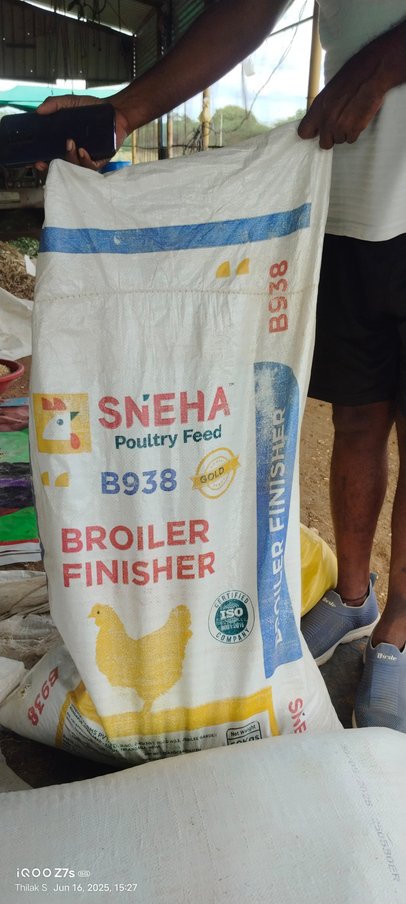
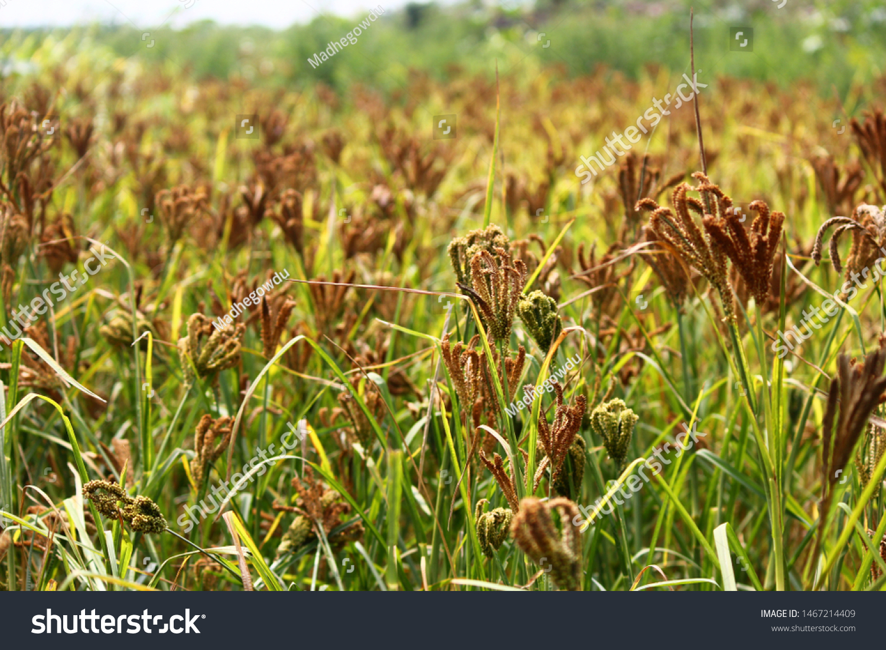
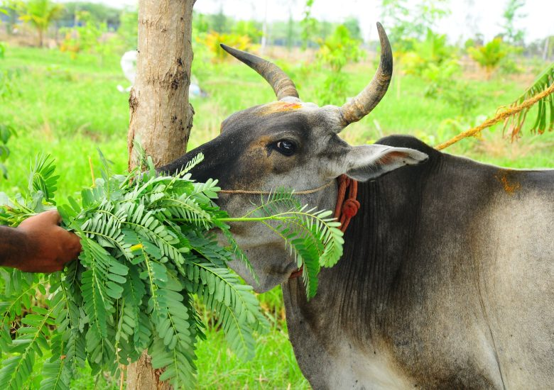

Feed Details
Here are the major feeds we use for healthy sheep rearing:

Sneha Poultry Feed
A protein-rich supplement that supports growth and health.

Groundnut Crop
Used after harvest as a nutritious dry fodder and feed source.

Ragi Crop
Provides energy and fiber, especially during dry seasons.

Sema Sappa
A local green fodder rich in essential nutrients.

Agisa Aku
Traditional leafy greens that promote digestion and overall well-being.